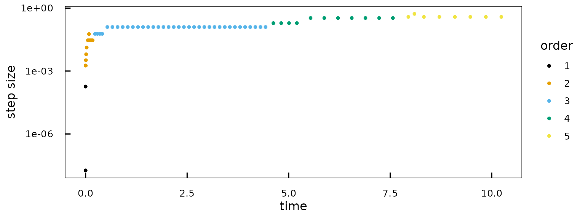

The chapter builds the decay chain \(A \to
B \to \emptyset\) of Get started with
several integrators, compiles the variants together and reads the result
of solveODE().
Model definition
cppODE() takes
the right-hand sides as a named character vector, the names being the
states. Every other symbol is a parameter. modelname names
the source file and the exported C symbols, outdir the
directory of the source (default tempdir()). With
compile = FALSE the source is written and nothing is
compiled.
eqns <- c(A = "-k1*A", B = "k1*A - k2*B")
parms <- c(A = 1, B = 0, k1 = 0.5, k2 = 0.2)
times <- seq(0, 10, by = 0.1)
chain <- cppODE(eqns, modelname = "g1_chain", outdir = tempdir(), compile = FALSE)
attr(chain, "variables")
#> [1] "A" "B"
attr(chain, "parameters")
#> [1] "k1" "k2"
basename(attr(chain, "srcfile"))
#> [1] "g1_chain.cpp"method selects the integrator,
stepTrace = TRUE records every step attempt (see Diagnostics).
adams <- cppODE(eqns, method = "adams", modelname = "g1_adams", compile = FALSE)
rb4 <- cppODE(eqns, method = "rb4", modelname = "g1_rb4", compile = FALSE)
tsit5 <- cppODE(eqns, method = "tsit5", modelname = "g1_tsit5", compile = FALSE)
traced <- cppODE(eqns, deriv = FALSE, stepTrace = TRUE, modelname = "g1_traced",
compile = FALSE)Further arguments of cppODE(): events,
forcings and rootfunc (chapter 2, chapter 5); deriv,
deriv2 and fixed (chapter 3); derivMode
(chapter 4);
profile = TRUE compiles timers that print a summary per
category to the standard error stream after each solve;
verbose = TRUE reports the steps of code generation.
Expression language
Right-hand sides, event values, roots and the equations of
cppFUN() share one expression language: R syntax
with +, -, *, /,
^, the common elementary functions, comparisons and logical
operators that give 1 or 0, and the switches piecewise(),
ifelse(), Heaviside() and sign().
time is the independent variable and pi the
number.
Joint compilation
compile() builds
the generated sources. With output they link into one
shared object in the directory of the first source; cores
runs the compiler jobs in parallel, args appends compiler
flags, verbose = TRUE shows the commands.
compile(chain, adams, rb4, tsit5, traced, output = "guide1", cores = 2)The flags of a model, such as the step trace, apply to the source of that model only.
The environment variables CPPDE_EXTRA_CXXFLAGS and
CPPDE_EXTRA_LIBS add flags to every compilation of the
session. A model recompiled into a shared object of another name needs
clearNativeSymbols();
compile() calls it itself.
Solution and output
solveODE()
takes the model, the output times and a named vector of initial values
and parameters.
out <- solveODE(chain, times, parms)
str(out[c("time", "variable", "tangent")])
#> List of 3
#> $ time : num [1:101] 0 0.1 0.2 0.3 0.4 0.5 0.6 0.7 0.8 0.9 ...
#> $ variable: num [1:101, 1:2] 1 0.951 0.905 0.861 0.819 ...
#> ..- attr(*, "dimnames")=List of 2
#> .. ..$ : NULL
#> .. ..$ : chr [1:2] "A" "B"
#> $ tangent : num [1:101, 1:2, 1:4] 1 0.951 0.905 0.861 0.819 ...
#> ..- attr(*, "dimnames")=List of 3
#> .. ..$ time : NULL
#> .. ..$ variable: chr [1:2] "A" "B"
#> .. ..$ sens : chr [1:4] "A" "B" "k1" "k2"
out$variable[101, ]
#> A B
#> 0.006738521 0.214327979| element | content |
|---|---|
time |
output times, n_t
|
variable |
states, [n_t, n_x]
|
tangent |
first-order sensitivities, [n_t, n_x, n_s]
(chapter 3) |
hessian |
second-order sensitivities,
[n_t, n_x, n_s, n_s] (chapter 3) |
cotangent, curvature,
correction, store, adjoint
|
reverse mode (chapter 4) |
diagnostics |
solver statistics |
trace |
step trace, with stepTrace = TRUE
|
The initial values hold at time 0. With
includeTimeZero = TRUE (default of cppODE())
the time 0 is added to the output grid, so a grid that starts later
still starts from them.
Tolerances and step control
abstol and reltol (default
1e-6) bound the local error of every step.
hini sets the first step (default 0,
estimated), maxsteps the total number of steps,
maxattempts the number of attempts without progress.
onFailure decides what an unsuccessful solve returns:
"stop" (default) is an error, "warn" and
"silent" return the rows up to the time reached.
part <- solveODE(chain, times, parms, maxsteps = 20, onFailure = "warn")
#> Warning: Solver did not complete: Maximum number of steps exceeded (20).
#> Reached t = 0.3 (4 of 101 time points).
#> Returning partial results.
part$diagnostics[c("return_code", "t_reached")]
#> $return_code
#> [1] -1
#>
#> $t_reached
#> [1] 0.3Diagnostics
diagnostics()
prints the statistics of a solve; the list itself is
$diagnostics.
diagnostics(out)
#> ---------------------- NDF solver statistics ----------------------
#> Return code : 0
#> Message : Integration was successful.
#> ---------------------------------------------------------------------
#> Accepted steps : 73
#> Rejected steps : 2
#> Function evaluations : 92
#> Jacobian evaluations : 2
#> LU factorizations : 16
#> Last step size (successful) : 0.363844
#> Last method order : 5
#> Time reached : 10
#> ---------------------------------------------------------------------A model compiled with stepTrace = TRUE returns one row
per step attempt as $trace, with step size h,
order q and error test value dsm;
traceFile writes the same to a CSV file.
tr <- solveODE(traced, times, parms)$trace
head(tr[, c("t", "h", "q", "dsm", "mode")], 4)
#> t h q dsm mode
#> 1 1.825377e-08 1.825377e-08 1 2.327654e-11 NDF
#> 2 1.825559e-04 1.825377e-04 1 2.327493e-03 NDF
#> 3 2.007933e-03 1.825377e-03 2 6.558959e-02 NDF
#> 4 3.833310e-03 1.825377e-03 2 2.863520e-02 NDF
ggplot(tr, aes(t, h, color = factor(q))) +
geom_point(size = 1) +
scale_y_log10() +
labs(x = "time", y = "step size", color = "order")
The first step of "bdf" and "adams" follows
CVODES: a state that starts at zero with a non-zero rate bounds it by
about abstol over that rate, here \(B\). From there the step grows by up to a
factor of \(10^4\), so the small start
costs two or three steps (the first step).
Integration methods
The chain is solved with every method, once as given and once stiff,
with k1 = 1000.
models <- list(bdf = chain, adams = adams, rb4 = rb4, tsit5 = tsit5)
stiff <- replace(parms, "k1", 1000)
count <- function(p) sapply(models, function(m)
unlist(solveODE(m, times, p)$diagnostics[c("accepted", "fevals", "setups")]))
count(parms)
#> bdf adams rb4 tsit5
#> accepted 73 41 44 25
#> fevals 92 54 264 151
#> setups 16 14 44 0
count(stiff)
#> bdf adams rb4 tsit5
#> accepted 147 458 69 2876
#> fevals 186 648 414 17264
#> setups 28 93 69 0Further arguments of solveODE() and
cppODE() adjust the integrator:
-
maxOrderbounds the order of"bdf"(1 to 5) and"adams"(1 to 12). -
stald = TRUElowers the BDF order when the step leaves the stability region of the order. -
useNDF = FALSE(incppODE()) takes the classical BDF coefficients instead of the NDF ones. -
sparse(incppODE()) chooses sparse LU by KLU (TRUE), dense LU (FALSE) or decides from the sparsity of the Jacobian (NULL, default). KLU is optional at install time, Installation. -
useDenseOutput = FALSE(incppODE()) makes"rb4"and"tsit5"land on every output time instead of interpolating.
sapply(1:5, function(q) solveODE(chain, times, parms, maxOrder = q)$diagnostics$accepted)
#> [1] 4088 332 126 82 73Choice of integrator
| situation | choice | details |
|---|---|---|
| stiff or unknown |
"bdf" (default) |
Stepping: BDF |
| large, sparse Jacobian |
"bdf" with sparse = TRUE
|
Installation |
| stiff, frequent events or switches, moderate size |
"rb4", one-step, restarts at full
order |
Stepping: Rosenbrock, Events |
| non-stiff | "tsit5" |
Stepping: Tsitouras |
| non-stiff, smooth, long horizon | "adams" |
Stepping: Adams-Moulton |
| BDF unstable at high order on oscillating modes |
stald = TRUE or maxOrder
|
Step-size control |
| the CVODES implementation of SUNDIALS | cvode() |
chapter 8, cvode() |